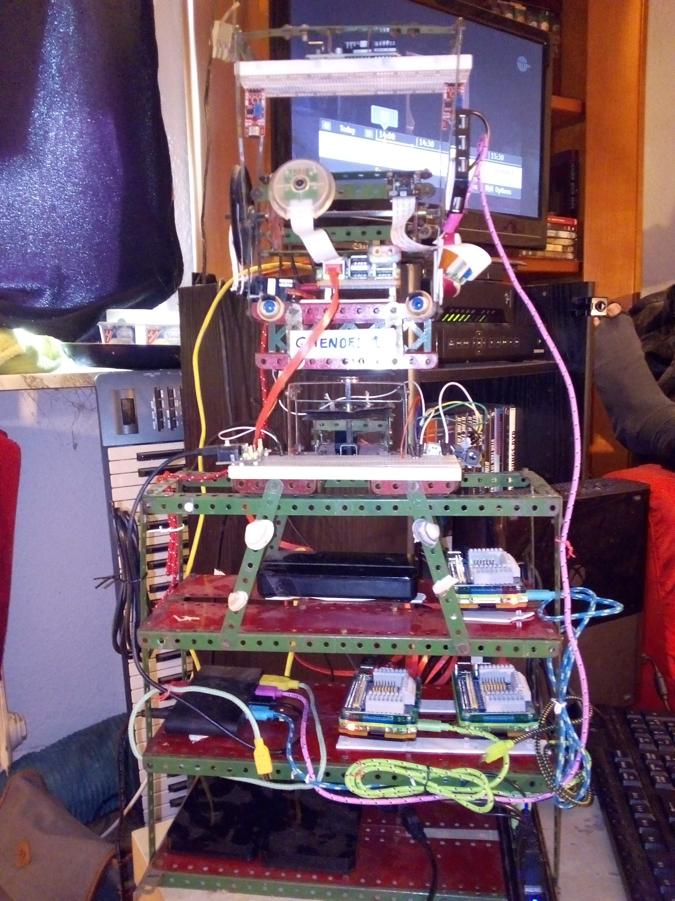
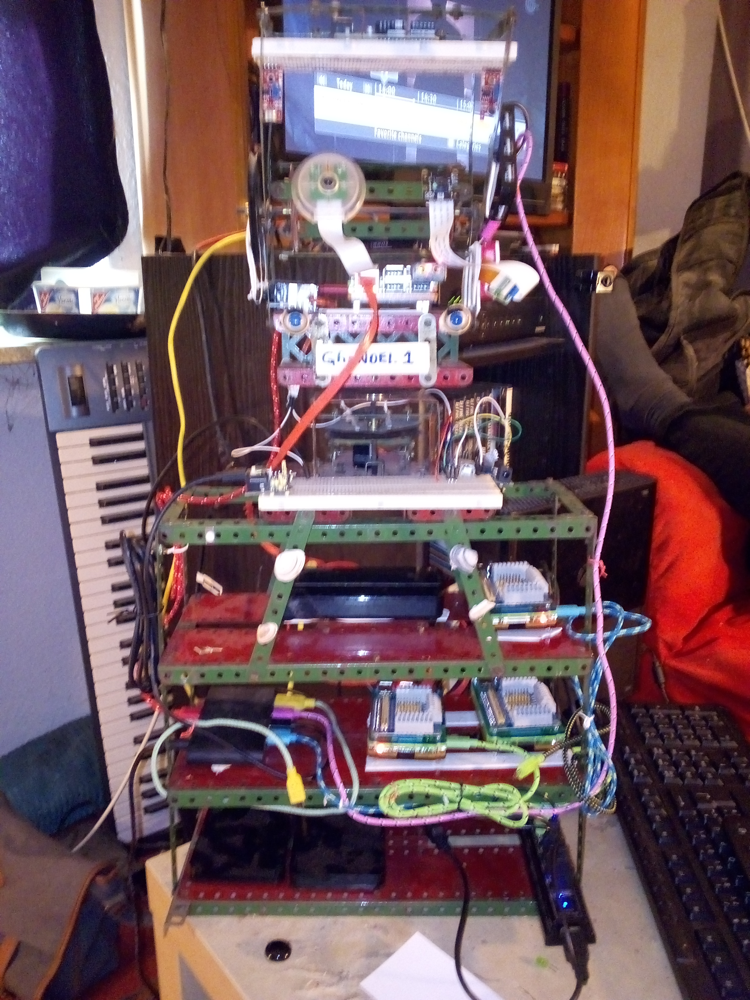
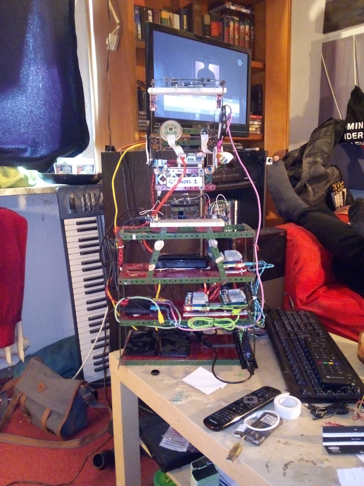
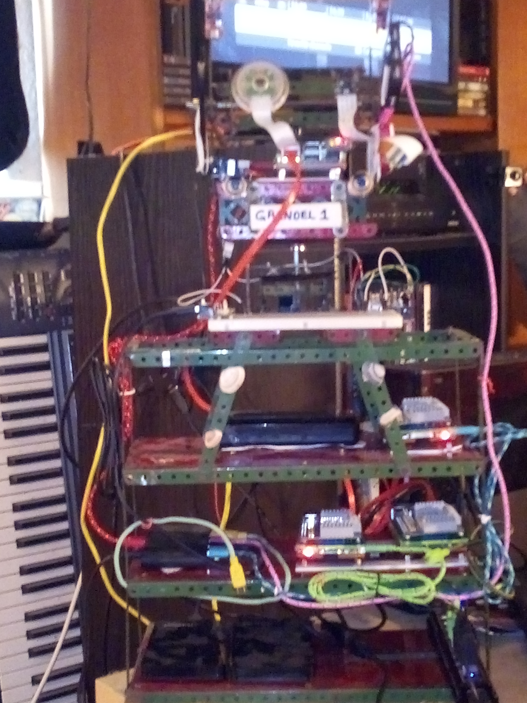

IntroductionMy general purpose AI platform.It is networked with all the other devices,and is the main guidence system for the various bots. please read the architectural white paper for more information Here are some general pictures of Grendel One: 
   And here is an early video of Grendel when he was just a head.
|